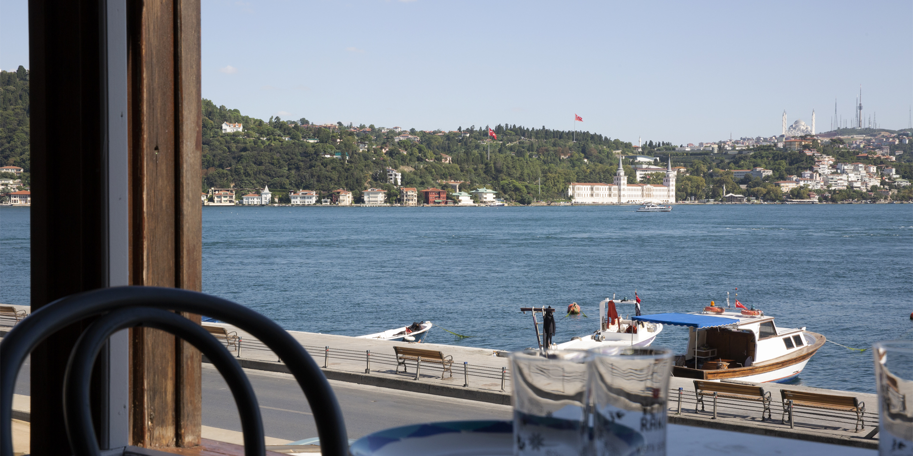
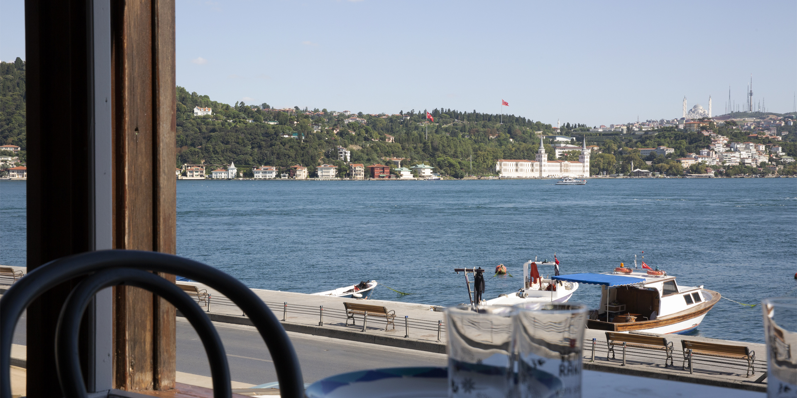
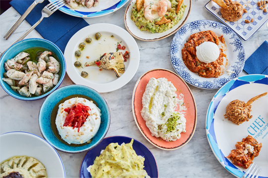
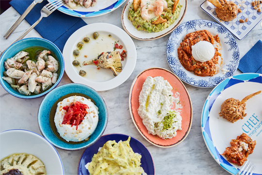
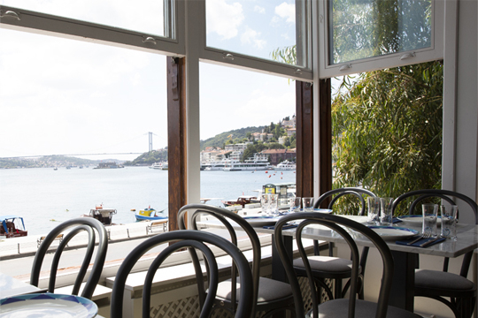
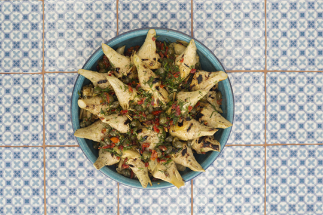
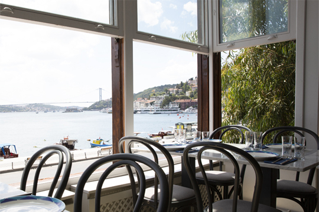
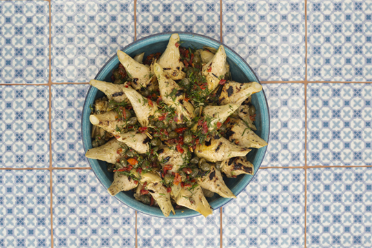

concept

Chef Meyhane was created by Gazi Ates, who became a pioneer of “mezze and tavern” concept in Turkey with Chef Mezze, as an answer to the question “How a tavern should be?”. The venue brings together traditional delicacies and modern interior design. The menu predominantly includes dishes from the Cretan cuisine, one of the most healthy and delicious cuisines in the world known for fresh and seasoned ingredients. The interior design concept is also influenced by the island of Crete. Custom arcs reflecting the architecture of old Cretan houses, wire mesh cabinets; jams and pickles displayed in special jars, and ceramic details create a unique and authentic ambience. In Chef Meyhane, ceramic details created by renowned ceramic artists can be seen in many forms, from appetizer plates to tables and lights fixtures. The ceramic-covered bar and “Lezzet Köşesi” (Flavor Corner), where delicious appetizers meet various types of raki, are the most attractive parts of the venue predominantly decorated in turquoise and cobalt blue.

 

 





reservation
If you wish to make a reservation, please fill out the following form.
about
Gazi and Bilal Ateş, known as creators of new taste concepts in Turkey, continue their journey without slowing down, which started with Chef Mezze, under the umbrella of Chef Group. Chef Group, after introducing a modern concept to the traditional tavern idea with Chef Mezze, blazed another trail with Chef Doner and brought “street food” together with artisan flavors. Lastly, the group proved that they are the synonym of appetizers and taverns in Turkey following the launch of the Chef Meyhane with the concept of “a modern Cretan tavern at Arnavutkoy”. Chef Group will keep on blazing new trails in the gastronomy world with their project.
contact
Arnavutköy Cad. No: 64/2 Beşiktaş
T: 0212 263 42 19 | 0530 067 50 41
E: info@chefmeyhanearnavutkoy.com